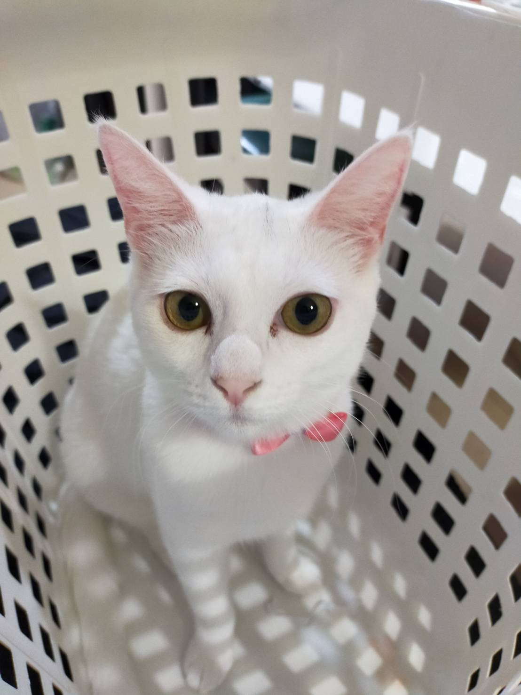
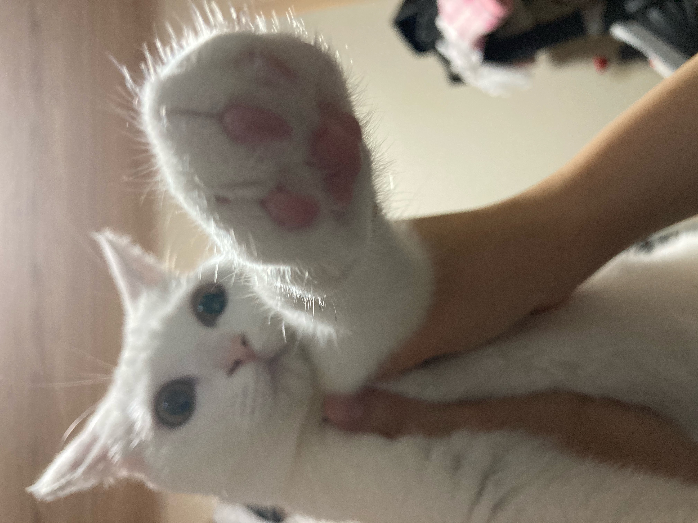
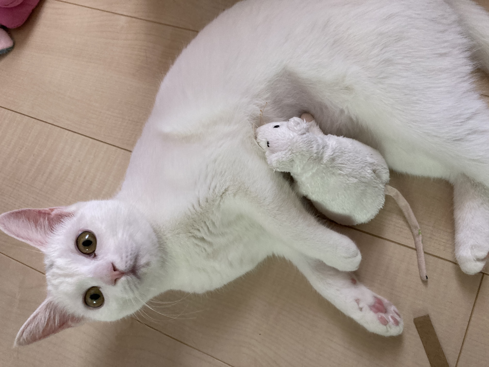

ももちゃんの美猫ファイル ～我が家に天使がやってきた～
ここでは我が家のアイドル猫「もも」についてご紹介します。
その魅力を存分に感じて下さい！
ももちゃんプロフィール

性別: 女の子♡
誕生日: 9月30日生まれ♡
年齢: ぴちぴちの9ヶ月♡
性格: 動き回ることが大好き♡ ときどき走りすぎで転んでしまうことがあるわ(/ω＼)
好きな食べもの:「♡ミャウミャウ(あじわいまぐろ)♡お肉よりお魚派よ(n*´ω`*n)」